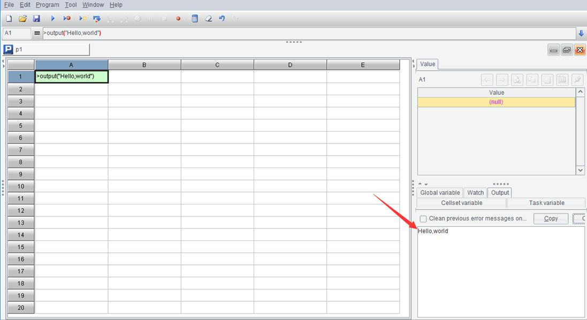
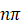

As we have said, data has types. A division operation may get a result of floating-point number. If we need to get an integer, by rounding about the result, for instance, what should we do?
It seems that we haven’t introduced a method for doing this. Even if the result is an integer (like 6/3), it will be represented by a floating-point number (3.0). How will it be converted into an integer that can be identified by the computer?
We need int() function to get this done.
|
|
A |
|
1 |
=int(6/3) |
|
2 |
=int(100/3+0.5) |
int(x) calculates the integer part of x:
int(3.0)=3，int(3.1)=3
int(-3.0)=-3，int(-3.1)=-3
(Here = represents a mathematical equation rather than an assignment statement)
The concept of function is introduced as early as in a high school mathematics textbook. For the time being, we can consider that the function concept in the programming language is the same as that in the mathematics. Both have the independent variable (which is called parameter in programming languages) and dependent variable (which is called return value in programming language). In the equation y=f(x), x is the parameter and y is the return value, or we can say f(x) returns y.
int(x) takes number x as the parameter and returns the integer part of x. It is called integer function.
By the way, int(x) returns a 32-bit integer. long(x) is used to convert a number (an integer, a floating-point number, or a long integer) to a long integer. There is also the float(x) function for converting a number to a floating-point number,
Usually, a practical program written in a specific language uses many ready-made functions that the language predefines. These ready-made functions are also called library functions like they are stored in and retrieved from a library of functions. Generally, a skilled programmer needs to be familiar with hundreds of frequently used library functions. It is important and necessary to learn to use the library functions if you want to master a programming language.
The significance of library functions lies in the reusability. The ready-made code for a specific operation that is packaged into a library function is convenient to use anywhere, anytime, while a rewriting is troublesome and error prone.
Moreover, most of the time programmers who develop high-level application cannot write code for implementing the low-level operations. They can only be achieved through library functions. It is almost impossible to implement int(x) function in SPL (It’s almost because hardcoding can make it if efficiency is completely not a concern. You can try to do this when you finish the relative section in this book).
You might be curious about how library functions come into being since they cannot be written in your currently used language?
Generally, a programming language is developed in another more foundamental programming language. Its library functions can be written with this more foundamental language. SPL, for instance, is developed in Java, so the library functions it cannot write are written in Java; Java is developed in C language, so the library functions it cannot write are written in C language; and an assembly language can write any library functions (though functions in this level are already beyond recognition).
This is another issue.
Actually, the concept of function in the programming language is wider than that in the high-school mathematics.
A function does not necessarily have parameters. SPL pi() function, for instance, returns only . To calculate the area of a circle, we use the following code:
>S=pi()*r*r
A function may not have a return value, like output(x) function.
|
|
A |
|
1 |
>output("Hello,World") |
Execute the code and we can view Hello,World in the right bottom section on the following interface.

output(x) function outputs the value of x to the output window on the right bottom section, so it will not return a value.
A function that does not return a value execute an action instead. It is more like a statement.
The word "function" also has the meaning of purpose or activity. This shows that the value return is the purpose or the target activity we want to achieve. For programmers, value returning is not the only significance of functions, they use them to do anything that can be done.
In this sense, we, sometimes, call the use of a function calling it, like it is called up to perform a specific task.
Like functions in mathematics, functions in programming languages may have more than one parameter. max(x,y), for instance, returns the larger one of x and y.
Some functions have a fixed number of parameters. The power function power(a,x) that returns ax always have two parameters. max() function, however, can have more parameters. Both max(1,2) and max(3,4,5) are allowed.
The parameters of a SPL function can have default values. Parameter n in pi() function takes 1 as its default. pi(n) means , but in most cases the function returns . So pi() means pi(1). It is important to know the parameter default values, otherwise you may not understand the code written by others.
Not all programming languages support parameter default value.
All features introduced as yet are not beyond Excel.